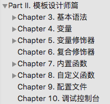

手册知识点：

什么是smarty，什么是模板。
就是一个模板引擎，当有模板的时候，一些重复的东西即可通过通用类抽离来解决。类似JavaWeb中的Jsp。
变量：
Php变量：assign函数
配置变量：setConfigDIr，loadConfig | 使用：#config_name#
原生变量：$smarty.now/$smarty.get
模板变量：{assign var=“one” value=“hello”} / {assign “one” “hello”} / {$one = “hello"}
变量使用：{$one}
变量修饰器：（使用smarty模板的函数，虽然tpl也能够解析PHP函数）
{$var|函数1：参数11：参数12|函数2：参数21}>
$var会传递给修饰器函数的第一个参数，接下来的参数11、12会作为第二三个参数传递
function modify($var,$参数1,$参数2){}
流程控制：
-
IF( ( (a==b) or (c==d) ) and (e==f) ) / 与或非 ( && || ! )
- 符号 简写 意思
== eq equals
!= ne,net not equals
> gt greater than
< lt less than
>= gte,ge greater than or equal
<= lte,le less than or equal
! not
% mod
is even 是偶数// if $a%2 is even
-
FOR，FORELSE
{for $var=0 to 10 step 2 max=3}//从0到10每步2，最多走3步
{$var}
{forelse}//
条件不成功，没有循环
{/for}
-
WHILE
{while $var lt 10}
{$var++}
{/while}
-
FOREACH，FOREACHELSE
{foreach $arr as $key=>$value}
{$value@iteration}=>{$value@iteration}=>{$k}=>{$value}<br>//从1开始
数字索引(从0开始)=>第几个(从1开始)=>键=>值
{if $value@first}//判断是否是第一个循环
{if $value@first}//判断是否是循环中的最后一个
{foreachelse}
数组为空或数组不存在
{/foreach}
{$value@total}//获得foreach的数组的总数(count)
函数：
<{fun_name args1=“a” args2=“b"}>
函数参数会作为key=>value对的数组，传递给函数。
function fun($params,$smarty){}
其中$params = array(args1=>a,args2=>b)
块函数：
<{fun_name args1=“” args2=“"}>
abc
<{/fun_name}>
function fun($params,$content,$smarty,&$repeat){}
其中：content = abc
repeat：当前是函数块头：true，还是尾：false。（注意，块函数会被调用两次）
嵌套块函数，$smarty->_tag_stack可以看嵌套的层级。
{block}、{include}、{config_load file=‘abc’ section=‘cba'}其实都是内置函数
插件拓展smarty：
插件方法定义：registerPlugin(type,name,callback);
type:定义plugin的类型：”function”函数,”block”函数块,”compiler”,”modifier”(变量修饰器)
name:在模板中使用的名字
function a($params,$smarty)
<data_now format=“%y/%m/%d">
format会作为params的数组子项传递到函数
自定义插件类：pluginDir
自定路径：$smarty->setPluginsDir();
文件命名规则：modify.函数名.php / function.函数名.php
方法命名：function smarty_modifier_myfunc($value,$param) / function smarty_function_myfunc($params,$smarty)
参数：第一个参数是修饰器所修饰的变量值，第二个以后才是使用的参数
模板继承：
父模板中定义了结构，包含一些block，子模板能够继承。
{extents } / php中：display(“extends:parent.tpl|child.tpl")
{block name append/prepend}
子模板继承之后能够修改父模板中的block内容，子模板中不再block中的内容是不合法且不显示的。
子模板能够通过关键字append/prepend将内容添加到父模板block的前面或者后面。
{smarty.block.parent/child}
子模板也能够获得父模板中的内容添加到指定位置。
父模板也能指定子模板block内容在父模板的block中的展示位置。
静态化：
ob_start、ob_flush、ob_clean、ob_get_contents
缓存：
缓存原理是使用上面的ob静态化函数，
获取融合后的模板php输出的HTML内容生成的HTML文件。
当下次请求到达的时候，直接读取HTML文件返回即可，不再需要执行PHP文件了。
当然对于动态内容来说，会存在缓存内容。
caching、is_cached、cache_time
局部不适用缓存<{no cache}><{/no_cached}>
smarty->clear_cache/clearAllCache
使用：
init方法，设置一些基本的结构：
configDir、pluginDir目录下的文件会自动加载。
写的一个smarty模板：